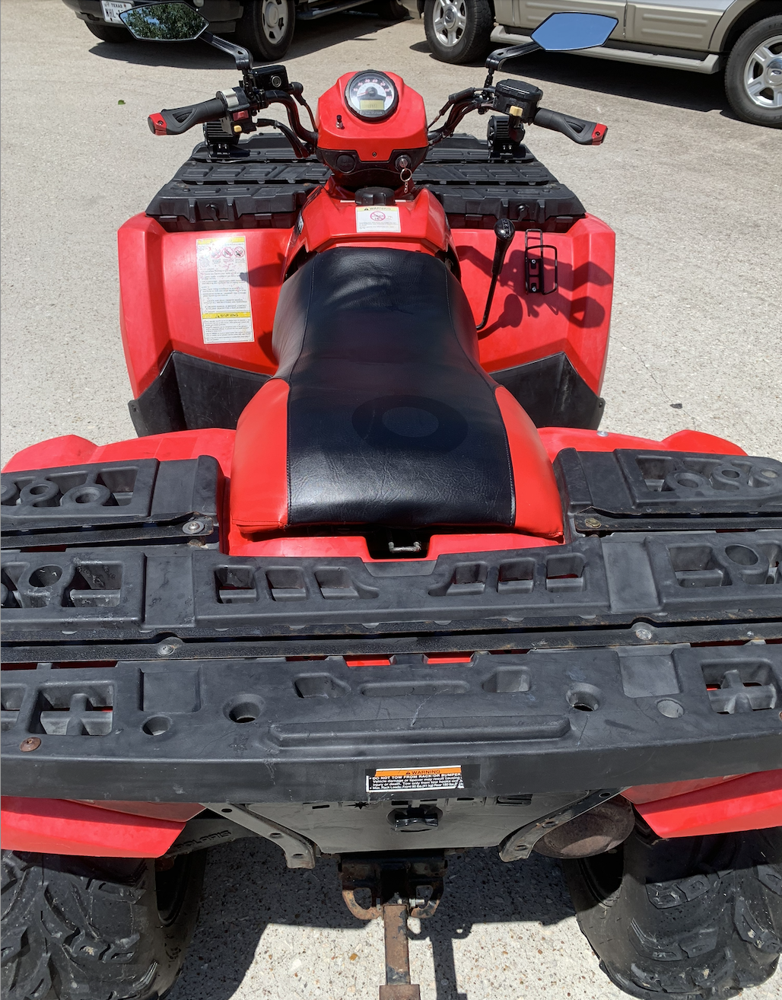
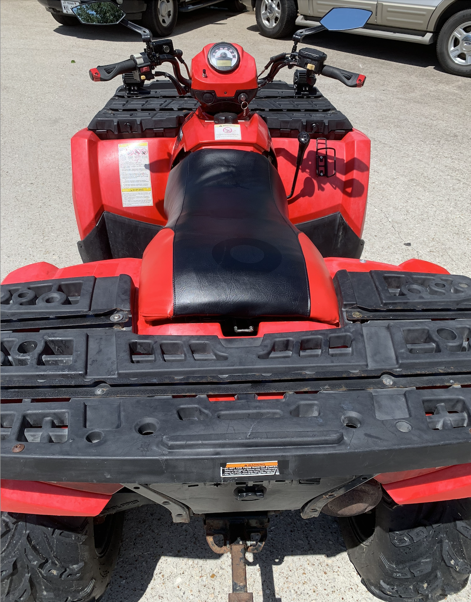

2007 Polars Sportsman EFI
This project features a home-restoration of a Facebook Marketplace ATV completed in High School
 


Purchased from Facebook Marketplace for $1500, this Polaris Sportsman 500 was restored to working condition. Over the course of a summer, the atv was stripped down to the chassis, with many key systems overhauled.
Key systems overhauled include the following:
- Engine and Cooling: replaced fuel injector, water pump impeller, and radiator
- Electrical: Replaced a litany of fuses, and added in additional headlights alongside replacing existing bulbs
- Suspension: Replaced all bushings and tie rods
- Brakes: Replaced all brake pads, calipers, and brake cylinder pumps
- Seat: Added in missing foam, replaced seat cover
- Fuel System: Replaced fuel lines, fuel pump, and pressure regulator
The following is a photo gallery of the progress, beginning from the day we drove it home to the day pictures were taken for it to be sold!
Photo 1: Here the atv is shown on the trailer right after purchase. A uhaul was rented to pick it up.
Photo 2: This shows the atv resting in the garage the night it was purchased prior to any restoration. The seat is in shambles, along with its fuel tank sitting above the rear rack.
Photo 3: This photo shows the front suspension exposed, as well as the gas tank removed. This was done to replace the fuel pump, the fuel injector, and other miscellaneous engine componants.
Photo 4: This photo shows the atv down to it's bones. Removing the plastics gave easy access to all componants, and a thorough wash removed all debris.
Photo 5: This picture was taken on the day the atv was listed to be sold! It was sold for $3400 on the same day it was listed. The proceeds of this project went to purchasing my college laptop, which I am currently using to craft this website!